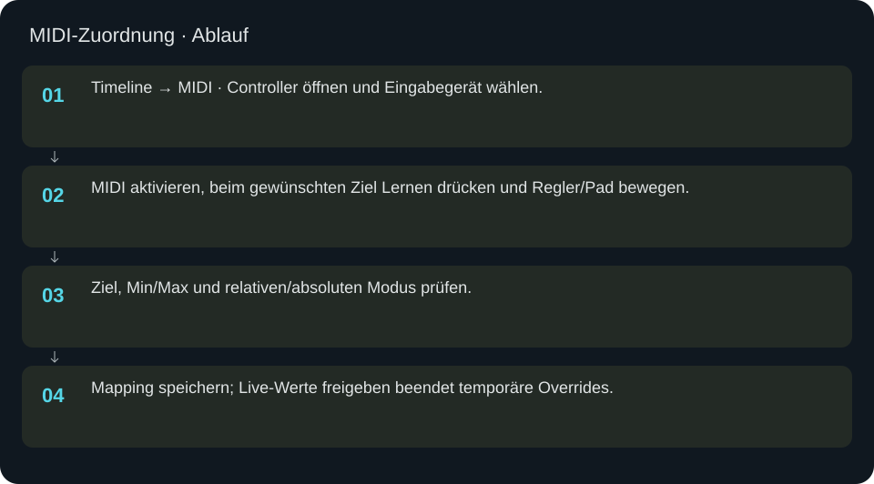
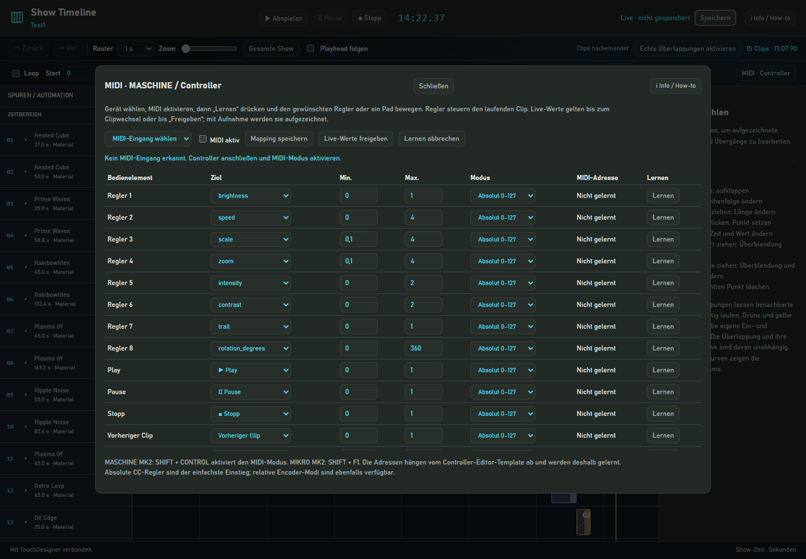

MIDI-Zuordnung
Alternative MIDI-Eingabe mit bewusst erlernten Adressen und gespeicherten Zuordnungen.
In welcher Reihenfolge?
- Timeline → MIDI · Controller öffnen und Eingabegerät wählen.
- MIDI aktivieren, beim gewünschten Ziel Lernen drücken und Regler/Pad bewegen.
- Ziel, Min/Max und relativen/absoluten Modus prüfen.
- Mapping speichern; Live-Werte freigeben beendet temporäre Overrides.


Schritt für Schritt
Direktes MK2 oder MIDI
Die direkte MK2-Anbindung verwendet HID für Displays und Tastenlogik. Der MIDI-Dialog arbeitet dagegen mit MIDI-Nachrichten und gelernten Adressen aus dem Controller-Template. Dieselbe Handbewegung darf nicht unbeabsichtigt über beide Wege wirken; den gewünschten Betriebsweg bewusst wählen.
Beispiel
Für einen Regler das Ziel Speed wählen, passenden Bereich und CC-Modus setzen, Lernen drücken und den Regler einmal bewegen. Angezeigte Adresse und Werte prüfen, Mapping speichern. Live-Werte gelten bis zum Clipwechsel oder Freigeben; eine Aufnahme macht ihre Bewegung dauerhaft.
Eingaben & Beispiele
| Feld | Bedeutung | Beispiel |
|---|---|---|
midiDevice | Tatsächlich angeschlossenes MIDI-Eingabegerät wählen. | MASCHINE MK2 |
midiEnabled | MIDI-Eingabe aktivieren oder abschalten. | aktiv |
Numerische Eingaben verwenden einen Punkt als Dezimaltrennzeichen. IPs, Pfade, Quellstarts und Universen zuerst mit der tatsächlichen Installation vergleichen.
Woran erkenne ich Erfolg?
Die erwartete Ansicht öffnet, Status und Vorschau entsprechen der gewählten Aktion, und es erscheint kein Fehler. Änderungen beim nächsten Laden beziehungsweise im Live-Status erneut lesen. Ein erfolgreicher Bildschirmtest beweist weder physische LED-Ausgabe noch korrekte Kameramessung.
Quellennachweis
Dateipfade im Projekt-Repository; die Onlinehilfe gibt keinen allgemeinen Dateisystemzugriff frei.
pixelblaze_mapper/timeline_assets/index.htmlpixelblaze_mapper/show_midi.py